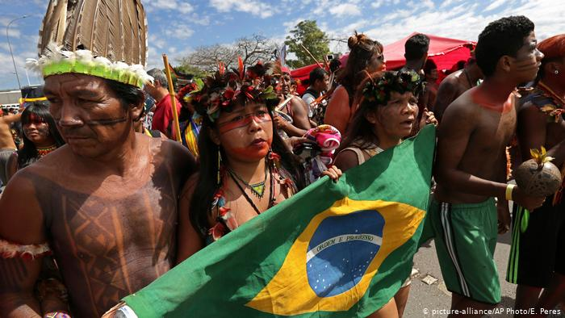

How to Help

Helping indigenous tribes in Brazil and supporting efforts to address their displacement and protect their rights can make a significant difference. Here are some ways you can contribute:
- Raise Awareness: Educate yourself and others about the challenges faced by indigenous tribes in Brazil. Share information through social media, blogs, or public speaking to raise awareness about the issues they face.
- Support Indigenous Organizations: Many indigenous-led organizations and NGOs are working to protect the rights and lands of indigenous communities in Brazil. Consider donating to these organizations or volunteering your time and skills to support their initiatives.
- Advocate: Engage with policymakers and elected officials to advocate for policies that protect indigenous rights and the Amazon rainforest. Write letters, make phone calls, or participate in campaigns that support indigenous causes.
- Boycott Unsustainable Products: Be conscious of the products you buy, particularly those linked to deforestation, such as beef, soy, and palm oil. Support sustainable and ethically sourced products instead.
- Support Eco-Tourism: If you plan to visit the Amazon region, choose eco-friendly and responsible tour operators that respect indigenous communities and their territories.
- Learn from Indigenous Cultures: Respect and learn from indigenous cultures and their traditional knowledge about sustainable living and conservation. Support initiatives that promote the preservation of indigenous languages, arts, and traditions.
- Participate in Conservation Efforts: Join or support environmental organizations working to protect the Amazon rainforest. These efforts often align with the interests of indigenous tribes.
- Stay Informed: Keep up to date with developments in Brazil's indigenous rights and environmental policies. Understanding the current situation is essential for effective advocacy.
- Support International Campaigns: There are global campaigns and petitions aimed at pressuring governments and corporations to respect indigenous rights and protect the Amazon. Participate in these campaigns and add your voice to the cause.
- Cultural Exchange: Promote cultural exchange initiatives that foster mutual understanding and respect between indigenous and non-indigenous communities.
Remember that supporting indigenous tribes is a long-term commitment, and it's essential to respect their autonomy and leadership in determining their own futures. Your efforts, combined with those of others, can contribute to the protection of both indigenous cultures and the critical ecosystems of the Amazon.
Back to About